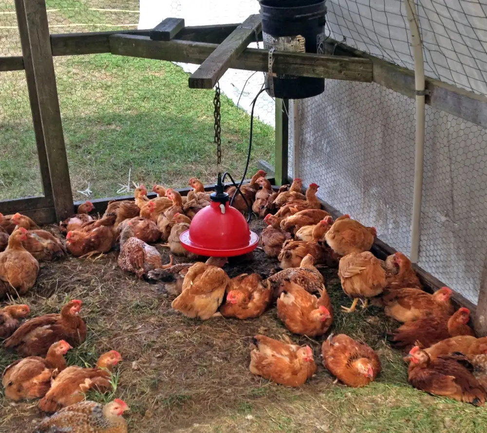

Guide · Säkerhet
Skydda höns mot räv. 7 metoder som faktiskt fungerar

Guide · Säkerhet

Räven är det största hotet. Här är sju metoder som fungerar, rangordnade.
I Sverige är räven överlägset det största hotet mot hönshus. Den är smart, uthållig och kan gräva sig in under dåligt stängsel. Men det finns fler:
Majoriteten av alla rävattacker sker i gryning och skymning, när hönsen fortfarande är ute eller inte har kommit in än. En automatisk lucköppnare som stänger när det blir mörkt är den enskilt bästa investeringen du kan göra.
Viktiga specifikationer att titta på:
Räven gräver. Vanligt staket som bara står på marken är i praktiken ingen barriär alls. Du behöver gräva ner nätet minst 30 cm under marken, gärna 40-50 cm. Alternativt böjer du nätet utåt under marken i en "L-form" . Det stoppar räven eftersom den börjar gräva intill staketet.
Använd galvaniserat nät med små rutor (max 2,5 cm). Inte gallerstängsel som räven kan tugga sig igenom.
Ett elstängsel med minst 1 joule utgångseffekt stoppar effektivt de flesta rovdjur. Två trådar räcker: en vid 15 cm höjd (rävnos) och en vid 30 cm höjd. Komplettera med ett mark-trådande om du har grävling i området.
Elstängsel är särskilt bra eftersom det lär rovdjuren att undvika området. efter ett eller två obehagliga möten slutar de försöka.
Ett billigt hobbyhönshus från Biltema kan inte stoppa en motiverad räv. Satsa på:
Har du problem med duvhök eller klättrande rovdjur? Spänn ett fiskenät eller volieranät över hela hönsgården. Det stoppar fåglar uppifrån och hindrar räv från att hoppa in över staketet (rävar kan hoppa över 2 meter högt).
Rörelsedetektorer med ljus eller ljud avskräcker rävar effektivt. åtminstone tills de vänjer sig. Kombinera gärna flera olika typer:
Den bästa skyddsstrategin är att inte locka räven från början:
En frisk vuxen räv kan hoppa upp till 2 meter högt från stillastående, och klättrar upp till 2,5 meter. Stängsel under denna höjd bör kompletteras med elstängsel eller överliggande nät.
Ja, definitivt. Räv kan gräva 30-40 cm djupt på kort tid. Du behöver antingen gjuta ett betongfundament, lägga ett stabilt nät under hönshuset, eller gräva ner stängslet minst 30 cm.
Nej. Hönsen lär sig snabbt att undvika trådarna efter ett lätt stim. Energin är låg (millijoule) och skadar inte varken djur eller människa. Bara obehagligt.
Gryning och skymning, plus natten. Därför är automatisk lucköppnare så effektiv. Den säkerställer att hönsen är inne när räven jagar.
Ja, vissa hundraser (t.ex. Maremma, Pyrenéer) är specialiserade på att vakta djur. Men en vanlig familjehund räcker ofta. närvaro av hundspår runt hönshuset avskräcker räven.
Nästa steg: Kolla vår jämförelse av automatiska lucköppnare. Den enskilt viktigaste investeringen för rävsäkerhet.